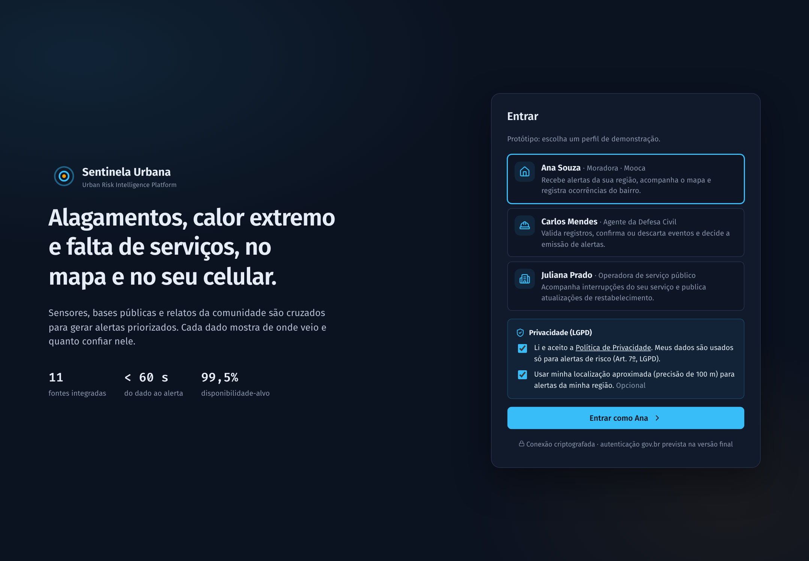
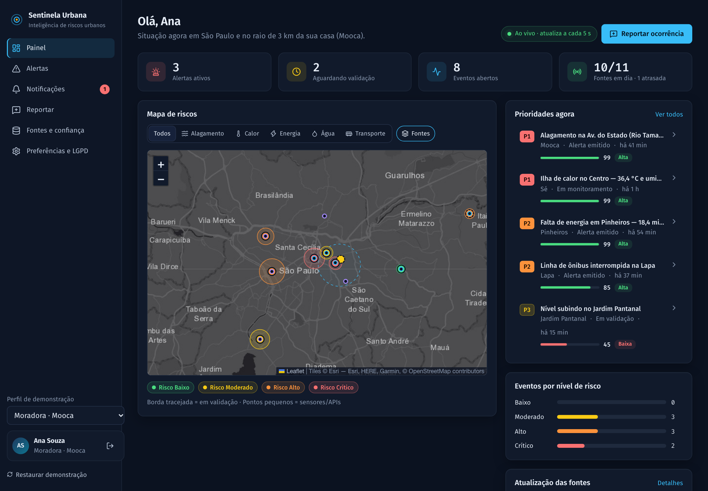
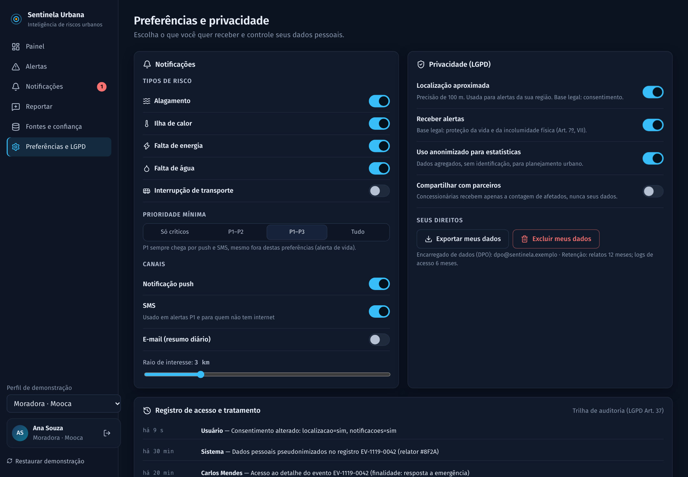
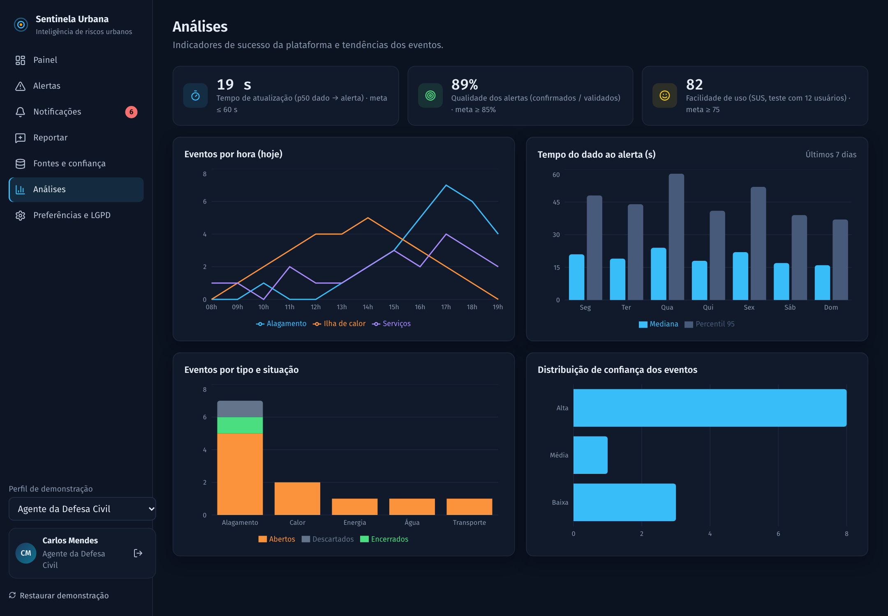
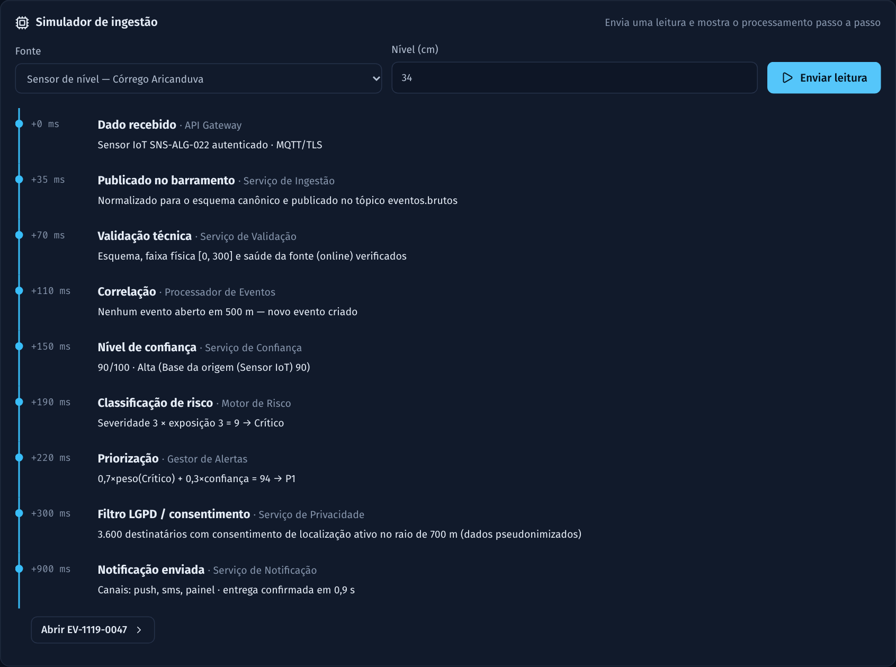

Sentinela Urbana: plataforma de inteligência de riscos urbanos com priorização de alertas por risco e confiança do dado
Juan Alberto Lenis Rodriguez (RM 559744) · Kagio Miura Neto (RM 559212)
FIAP — Engenharia de Software · São Paulo, SP, Brasil · novembro de 2026
Resumo
Alagamentos, ilhas de calor e interrupções de serviços essenciais afetam diariamente a população das grandes cidades, mas os dados que poderiam antecipar esses eventos estão dispersos entre sensores, bases públicas e relatos informais, sem indicação de origem ou de confiabilidade. Este trabalho apresenta a Sentinela Urbana, uma plataforma integrada de monitoramento e análise de riscos urbanos que recebe dados de sensores IoT, bases públicas e registros comunitários, calcula um nível de confiança para cada dado, classifica o nível de risco de cada evento e prioriza alertas combinando risco e confiança. São descritos o levantamento de 20 requisitos funcionais e 10 requisitos não funcionais classificados segundo a ISO/IEC 25010:2023, as regras de negócio de priorização, os diagramas UML de Sequência e de Estados, a arquitetura em camadas — com a localização dos componentes de processamento de eventos, notificação e proteção de dados pessoais (LGPD) — e um protótipo funcional web com dez telas. O protótipo implementa o motor de regras descrito e demonstra, de ponta a ponta, o fluxo do dado ao alerta, evidenciando em todas as telas a origem e o nível de confiança da informação.
Palavras-chave: riscos urbanos; priorização de alertas; confiabilidade de dados; Internet das Coisas; LGPD.
Abstract
Floods, urban heat islands and outages of essential services affect city dwellers every day, yet the data that could anticipate such events is scattered across sensors, public datasets and informal reports, with no indication of provenance or reliability. This work presents Sentinela Urbana, an integrated urban risk monitoring platform that ingests IoT sensor data, open public data and community reports, computes a confidence score for each data point, classifies each event's risk level and prioritizes alerts by combining risk and confidence. We describe 20 functional and 10 non-functional requirements classified according to ISO/IEC 25010:2023, the alert prioritization rules, UML sequence and state machine diagrams, a layered architecture that locates event processing, notification and personal data protection components, and a ten-screen working web prototype that implements the rule engine end to end.
Keywords:urban risk; alert prioritization; data reliability; Internet of Things; data protection.
1 Introdução
As cidades brasileiras convivem com riscos cotidianos que, embora menos noticiados que grandes desastres, afetam a rotina de milhões de pessoas: alagamentos repentinos em vias e margens de córregos, episódios de calor extremo agravados pelas ilhas de calor urbanas e interrupções no fornecimento de energia, água e transporte público. A Política Nacional de Proteção e Defesa Civil atribui ao poder público o dever de monitorar riscos e alertar a população (BRASIL, 2012), mas a informação necessária para isso está fragmentada entre redes de sensores municipais, institutos meteorológicos, concessionárias e relatos espontâneos de moradores.
Essa fragmentação gera três problemas. O primeiro é o atraso: o morador frequentemente descobre o alagamento quando já está nele. O segundo é a desconfiança: informações sem origem identificada e dados desatualizados circulam junto de alertas oficiais, e alertas genéricos em excesso produzem a chamada fadiga de alerta. O terceiro é a falta de priorização: equipes de campo recebem chamados duplicados e não sabem qual ocorrência atender primeiro.
O objetivo deste trabalho é especificar, modelar e prototipar uma plataforma — a Sentinela Urbana — que receba, organize e processe dados dessas três fontes, priorize alertas por nível de risco e indique, para cada informação, a sua origem e o seu nível de confiança, considerando escalabilidade, disponibilidade e proteção de dados pessoais. O artigo está organizado da seguinte forma: a seção 2 descreve o problema, o público-alvo e as personas; a seção 3 apresenta os requisitos; a seção 4, as regras de negócio de confiança, risco e priorização; a seção 5, os diagramas UML; a seção 6, a arquitetura em camadas; a seção 7, o protótipo; a seção 8, a rastreabilidade entre os artefatos; a seção 9, os indicadores de avaliação; e a seção 10, as considerações finais.
2 Contexto, público-alvo e personas
2.1 Público-alvo
A plataforma atende a três grupos: (i) moradores de áreas urbanas, com atenção especial a regiões vulneráveis a alagamentos e calor e a pessoas com baixa familiaridade digital; (ii) agentes locais, como Defesa Civil, subprefeituras e equipes de campo, que validam e respondem às ocorrências; e (iii) operadores de serviços públicos de energia, saneamento e transporte, que informam interrupções e restabelecimentos.
2.2 Personas
Para orientar as decisões de requisitos e de interface foram definidas três personas, sintetizadas no Quadro 1.
Quadro 1 — Personas da Sentinela Urbana
Ana Souza, 34 anosMoradora da Mooca
Auxiliar administrativa, mora perto do Rio Tamanduateí e vai ao trabalho de ônibus. Já perdeu móveis em um alagamento e recebe boatos por aplicativos de mensagem.
Objetivos: ser avisada antes de sair de casa; saber se o alerta é confiável; avisar a vizinhança rapidamente.
Carlos Mendes, 46 anosAgente da Defesa Civil
Há 12 anos na função, coordena uma equipe na região central em plantões de 12 h. Recebe chamados duplicados e não sabe quais são reais.
Objetivos: ver as ocorrências priorizadas em um só painel; validar ou descartar relatos em segundos; emitir alertas com segurança.
Juliana Prado, 39 anosOperadora de serviço público
Analista do centro de operações de uma distribuidora de energia. A população não conhece a previsão de restabelecimento e sobrecarrega a central telefônica.
Objetivos: publicar atualizações oficiais e acompanhar impactos de uma falha sobre outros serviços.
Fonte: elaborado pelos autores (2026).
3 Requisitos
Os requisitos foram levantados a partir do enunciado do desafio e das necessidades das personas, seguindo a distinção clássica entre requisitos funcionais, que descrevem serviços do sistema, e não funcionais, que restringem a qualidade desses serviços (SOMMERVILLE, 2018). A prioridade adota três níveis: Alta (essencial ao produto mínimo), Média (importante) e Baixa (desejável). A última coluna indica a tela do protótipo que atende ao requisito (seção 7).
3.1 Requisitos funcionais
Tabela 1 — Requisitos funcionais
ID
Descrição
Prioridade
Tela
RF01
Permitir o acesso por perfil (morador, agente da Defesa Civil e operador de serviço) e exigir o aceite da política de privacidade no primeiro acesso, com consentimento opcional de localização.
Alta
T01
RF02
Receber dados de sensores IoT (MQTT), bases públicas (REST, CSV, GTFS-RT) e registros comunitários (aplicativo), normalizando-os para um esquema canônico de evento.
Alta
T07, T08
RF03
Validar tecnicamente cada dado recebido (esquema, faixa física plausível e saúde da fonte) e descartar dados inválidos registrando o motivo.
Alta
T04, T07
RF04
Correlacionar dados do mesmo tipo em raio de 500 m e janela de 30 min a um único evento, agregando-os como evidências (deduplicação e corroboração).
Alta
T04
RF05
Calcular e exibir, para cada dado e evento, a origem (tipo, identificador e responsável pela fonte), o horário da última atualização e o nível de confiança (0–100; Alta, Média ou Baixa), com a composição dos fatores.
Alta
T02–T04, T07, T08
RF06
Classificar o nível de risco (Baixo, Moderado, Alto, Crítico) e a prioridade (P1–P4) de cada evento conforme as regras RN04 a RN06.
Alta
T03, T04
RF07
Exibir painel de acompanhamento com mapa de eventos e fontes, indicadores, lista de prioridades e filtro por tipo de risco, atualizado em tempo real.
Alta
T02
RF08
Listar alertas e eventos ordenados por prioridade, com busca e filtros por situação, tipo, nível de risco e nível de confiança.
Alta
T03
RF09
Exibir o detalhe do evento com ciclo de vida, cálculo de risco e prioridade, evidências com origem e confiança, mapa da área afetada, rastro de processamento e histórico de transições.
Alta
T04
RF10
Permitir ao morador registrar ocorrência informando tipo, local, intensidade, descrição e foto opcional, exibindo a confiança inicial estimada antes do envio e um protocolo ao final.
Alta
T06
RF11
Permitir ao morador confirmar um evento existente, registrando a confirmação como corroboração.
Média
T04
RF12
Permitir ao agente confirmar (com ou sem alerta), descartar com motivo, emitir, reemitir, monitorar e encerrar eventos, respeitando as transições do Diagrama de Estados.
Alta
T04, T05
RF13
Enviar notificações por push, SMS e painel conforme a prioridade do evento (RN08), a área afetada e as preferências e consentimentos do usuário.
Alta
T05
RF14
Oferecer central de notificações com abas, canais utilizados, marcação de leitura e acesso direto ao evento ou à tarefa de validação.
Alta
T05
RF15
Exibir catálogo de fontes com responsável, protocolo, frequência esperada, última atualização, situação, disponibilidade e confiança base, e o detalhe de cada fonte com leituras recentes e linhagem do dado.
Alta
T07, T08
RF16
Permitir ao operador publicar atualizações oficiais (por exemplo, previsão de restabelecimento) e marcar o serviço como restabelecido.
Média
T04
RF17
Permitir ao usuário configurar tipos de risco de interesse, prioridade mínima, canais e raio de interesse.
Média
T09
RF18
Permitir ao titular gerenciar consentimentos, exportar seus dados (portabilidade) e solicitar a eliminação dos dados pessoais.
Alta
T09
RF19
Apresentar análises com os indicadores de sucesso (tempo de atualização, qualidade dos alertas, facilidade de uso) e séries de eventos por tipo, situação e confiança.
Média
T10
RF20
Registrar trilha de auditoria de acessos e tratamentos de dados pessoais, visível ao titular.
Média
T09
Fonte: elaborado pelos autores (2026).
3.2 Requisitos não funcionais
Os requisitos não funcionais foram classificados segundo as características e subcaracterísticas do modelo de qualidade de produto da ISO/IEC 25010:2023 (ISO, 2023), cada um com critério de aceitação mensurável. A cobertura obrigatória — tempo de atualização, disponibilidade, escalabilidade, usabilidade e segurança/LGPD — corresponde aos requisitos RNF01 a RNF05.
Tabela 2 — Requisitos não funcionais classificados pela ISO/IEC 25010:2023
ID
Característica / subcaracterística
Requisito e critério de aceitação
Prior.
RNF01
Eficiência de desempenho / Comportamento temporal (tempo de atualização)
Do recebimento de um dado de sensor à entrega do alerta P1: ≤ 60 s no percentil 95 (mediana ≤ 20 s). O painel reflete novas leituras em ≤ 10 s. Uma fonte é sinalizada como “atrasando” acima de 1,5 vez o intervalo esperado e como “desatualizada” acima de 3 vezes.
Disponibilidade mensal de 99,5% da plataforma e de 99,9% do serviço de notificação, com implantação em ao menos duas zonas de disponibilidade, RTO ≤ 15 min, RPO ≤ 1 min e verificações de saúde a cada 30 s.
Alta
RNF03
Flexibilidade / Escalabilidade (escalabilidade)
Suportar 50.000 leituras/min em operação normal e picos de 5 vezes durante tempestades sem violar o RNF01, com escala horizontal automática dos serviços de processamento; notificar 2 milhões de destinatários em até 5 min.
Alta
RNF04
Capacidade de interação / Operabilidade, Inclusividade, Proteção contra erro do usuário (usabilidade)
Conformidade com a WCAG 2.2 nível AA (W3C, 2023): contraste ≥ 4,5:1, navegação por teclado, foco visível e alvos ≥ 44 px. Risco e confiança nunca indicados apenas por cor. Registro de ocorrência em até 4 etapas e menos de 60 s. Interface responsiva de 360 px a 1920 px. Pontuação SUS ≥ 75 (BROOKE, 1996).
Alta
RNF05
Segurança / Confidencialidade, Integridade, Responsabilização, Autenticidade (segurança e LGPD)
Tratamento conforme a LGPD (BRASIL, 2018): TLS 1.3 em trânsito e AES-256 em repouso; pseudonimização do relator; minimização (localização arredondada a 100 m, remoção de metadados EXIF, borramento de rostos e placas); bases legais registradas (consentimento e proteção da vida, art. 7º, I e VII); retenção de relatos por 12 meses e de registros de acesso por 6 meses; atendimento aos direitos do titular (art. 18) em até 15 dias; controle de acesso por perfil; trilha de auditoria imutável; autenticação das fontes por mTLS ou token.
Alta
RNF06
Confiabilidade / Tolerância a falhas, Recuperabilidade
A falha ou o atraso de uma fonte não interrompe o processamento das demais; mensagens têm reentrega idempotente e fila de mensagens mortas; nenhum dado aceito (HTTP 202) pode ser perdido.
Alta
RNF07
Proteção (safety) / Falha segura, Alerta de perigo
Nenhum alerta público é emitido com confiança < 50 ou com base apenas em relato comunitário isolado sem validação humana (RN07). Alertas P1 ignoram o modo “não perturbe” e também são enviados por SMS.
Alta
RNF08
Compatibilidade / Interoperabilidade
Uso de padrões abertos: MQTT para sensores, REST/JSON para APIs, GTFS-RT para transporte e CAP — Common Alerting Protocol (OASIS, 2010) — para exportar alertas a outros órgãos.
Limiares e pesos das regras configuráveis sem nova implantação; motor de regras isolado em módulo próprio, com cobertura de testes automatizados ≥ 80%.
Média
RNF10
Flexibilidade / Adaptabilidade, Instalabilidade
Aplicação web responsiva instalável como PWA, compatível com os navegadores modernos em computador e celular.
Baixa
Fonte: elaborado pelos autores (2026), com base em ISO (2023).
4 Regras de negócio: confiança, risco e priorização de alertas
As regras a seguir definem como cada dado recebe um nível de confiança, como cada evento é classificado por risco e como risco e confiança se combinam para priorizar alertas. Elas estão implementadas no protótipo no módulo app/src/engine/rules.js e são recalculadas a cada nova evidência.
4.1 Nível de confiança do dado (RN01–RN03)
RN01 — Confiança base por origem. Cada origem recebe uma pontuação base que reflete a sua confiabilidade intrínseca (Tabela 3). RN02 — Ajustes. A base é ajustada por fatores de corroboração, evidência, atualidade e saúde da fonte (Tabela 4). A confiança final é obtida pela Equação (1), limitada a 99, pois o valor 100 é reservado à validação humana. RN03 — Faixas. Alta: 75–100; Média: 50–74; Baixa: 0–49. A confiança é sempre exibida como barra, número e rótulo textual.
confiança = min(99, max(0, base + Σ ajustes))(1)
Tabela 3 — Confiança base por origem do dado (RN01)
Origem
Base
Justificativa
Agente de campo (Defesa Civil)
95
Observação direta de profissional treinado.
Sensor IoT calibrado
90
Medição física contínua e objetiva.
Base pública oficial (API)
85
Fonte institucional, porém com menor frequência de atualização.
Registro comunitário
40
Relato humano sem verificação; ganha confiança com evidências.
Fonte: elaborado pelos autores (2026).
Tabela 4 — Ajustes do nível de confiança (RN02)
Fator
Ajuste
Corroboração: cada fonte independente no mesmo evento (500 m / 30 min), até duas
+15 (máx. +30)
Reputação do relator comunitário (0 a 1, histórico de relatos confirmados)
+0 a +15
Foto anexada ao relato comunitário
+10
Idade do dado acima de 15 min / acima de 60 min
−10 / −25
Sensor com calibração vencida (mais de 90 dias)
−15
Sensor em estado degradado (falhas de leitura, bateria baixa)
−30
Validação por agente da Defesa Civil
= 100
Fonte: elaborado pelos autores (2026).
4.2 Nível de risco (RN04–RN05)
RN04 — Severidade. Cada tipo de risco tem uma escala de severidade de 1 a 4 baseada na grandeza medida (Tabela 5). RN05 — Risco. O nível de risco resulta do produto entre severidade e exposição (Equação 2), em que a exposição (1 a 3) considera densidade populacional e vulnerabilidade da área — 3 indica área de risco mapeada, escolas, hospitais ou população idosa. Os produtos 1–2 correspondem a risco Baixo; 3–4, Moderado; 6–8, Alto; e 9–12, Crítico.
risco = severidade (1–4) × exposição (1–3)(2)
Tabela 5 — Severidade por tipo de risco (RN04)
Tipo
1
2
3
4
Alagamento (lâmina d’água)
< 10 cm
10–30 cm
31–50 cm
> 50 cm
Ilha de calor (temperatura)
< 32 °C
32–34,9 °C
35–37,9 °C
≥ 38 °C, ou ≥ 35 °C com umidade < 20%
Energia ou água (domicílios)
< 1 mil
1–10 mil
10–50 mil
> 50 mil ou serviço crítico
Transporte (atraso)
< 20 min
20–60 min
61–120 min
> 120 min
Fonte: elaborado pelos autores (2026).
4.3 Prioridade, confirmação e emissão (RN06–RN09)
RN06 — Prioridade. A prioridade combina risco e confiança pela Equação (3), em que o peso do risco vale 20 (Baixo), 45 (Moderado), 70 (Alto) ou 95 (Crítico). O peso maior do risco garante que um evento grave seja sempre tratado com urgência, enquanto a confiança modula a ordem entre eventos de mesmo risco. A Tabela 6 apresenta as faixas, os prazos de validação humana (SLA) e os canais.
Tabela 6 — Prioridade, SLA de validação e canais de notificação (RN06 e RN08)
Prioridade
Pontuação
SLA
Ação após confirmação
Canais
Exemplo
P1
≥ 85
5 min
Alerta imediato
Push, SMS e painel
Alagamento crítico, confiança 99 → 96
P2
65–84
10 min
Alerta
Push e painel
Falta de energia (Alto), confiança 99 → 79
P3
45–64
30 min
Alerta
Painel
Sensor degradado (Alto), confiança 45 → 63
P4
< 45
120 min
Sem alerta público; monitoramento
Apenas registro
Alagamento baixo, confiança 90 → 41
Fonte: elaborado pelos autores (2026).
RN07 — Confirmação automática com falha segura. Um evento com confiança ≥ 50 é confirmado automaticamente. Um evento com confiança < 50, ou baseado apenas em um relato comunitário sem corroboração, permanece “Em validação” e gera uma tarefa para a Defesa Civil com o SLA da sua prioridade; nenhum alerta público é emitido até a validação ou até que nova evidência eleve a confiança. O agente pode confirmar o evento, o que eleva a confiança a 100, ou descartá-lo com motivo obrigatório.
RN08 — Destinatários. Recebem o alerta as pessoas com consentimento de localização ativo dentro do raio do evento que optaram pelo tipo de risco e pela prioridade mínima configurada (RF17); agentes e operadores recebem os eventos P1 a P3 e as tarefas de validação.
RN09 — Correlação, escalonamento e encerramento. Dados do mesmo tipo a até 500 m de um evento aberto são agregados a ele como evidências, sem gerar alerta duplicado. Se um evento em monitoramento passar a uma prioridade mais alta, o alerta é reemitido. Um evento é encerrado quando a medição volta à severidade 1 por 60 min, quando o operador marca o serviço como restabelecido ou por decisão do agente.
5 Modelagem comportamental
A modelagem utiliza a notação UML 2.5.1 (OMG, 2017). O Diagrama de Sequência descreve a interação entre os componentes da arquitetura (seção 6) no fluxo de um alerta; o Diagrama de Estados descreve o ciclo de vida de um evento de risco.
5.1 Diagrama de Sequência
A Figura 1 representa o fluxo completo: o dado é recebido pelo API Gateway, normalizado pelo Serviço de Ingestão e publicado no Barramento de Eventos; o Processador de Eventos o valida e correlaciona; os serviços de Confiança e o Motor de Risco calculam confiança e risco; o Gestor de Alertas define a prioridade e, quando a regra RN07 exige, solicita validação ao agente da Defesa Civil (fragmento alt); se o evento for confirmado com prioridade P1 a P3 (fragmento opt), o Serviço de Privacidade filtra os destinatários com consentimento e o Serviço de Notificação envia o alerta pelos canais em paralelo (fragmento par).
Figura 1 — Diagrama de Sequência do fluxo de recebimento e disparo de um alerta
sequenceDiagram
autonumber
participant F as Fonte externa (Sensor / API pública / App)
participant GW as API Gateway
participant IN as Serviço de Ingestão
participant BR as Barramento de Eventos
participant PE as Processador de Eventos (Validação + Correlação)
participant CF as Serviço de Confiança
participant RK as Motor de Risco
participant AM as Gestor de Alertas
actor DC as Agente Defesa Civil
participant PV as Serviço de Privacidade (LGPD)
participant NT as Serviço de Notificação
actor U as Morador (App)
F->>GW: enviarDado(leitura, credencial)
activate GW
GW->>GW: autenticar (mTLS/token) e limitar taxa
GW->>IN: encaminhar(leitura)
activate IN
IN->>IN: normalizar para esquema canônico
IN->>BR: publicar("eventos.brutos", dado)
IN-->>GW: 202 Accepted
deactivate IN
GW-->>F: 202 Accepted (protocolo)
deactivate GW
BR->>PE: consumir(dado)
activate PE
PE->>PE: validar esquema, faixa física e saúde da fonte
alt dado inválido
PE->>BR: publicar("eventos.descartados", motivo)
else dado válido
PE->>PE: correlacionar(tipo, raio 500 m, 30 min)
PE->>CF: calcularConfianca(evidências, fonte)
activate CF
CF-->>PE: confiança 0–100 e nível
deactivate CF
PE->>RK: classificarRisco(medição, exposição)
activate RK
RK-->>PE: severidade × exposição → nível de risco
deactivate RK
PE->>AM: avaliar(evento, risco, confiança)
deactivate PE
activate AM
AM->>AM: prioridade = 0,7·peso(risco) + 0,3·confiança
alt confiança < 50 ou relato isolado (RN07)
AM->>DC: solicitarValidacao(evento, SLA)
DC-->>AM: confirmar() / descartar(motivo)
else confiança ≥ 50
AM->>AM: confirmar automaticamente
end
opt evento confirmado e prioridade P1–P3
AM->>PV: obterDestinatarios(área, tipo, prioridade)
activate PV
PV-->>AM: destinatários com consentimento (pseudonimizados)
deactivate PV
AM->>NT: enviarAlerta(evento, destinatários, canais)
activate NT
par Push
NT->>U: notificação push
and SMS (somente P1)
NT->>U: SMS
and Painel
NT->>U: item na central de notificações
end
U-->>NT: confirmação de entrega
NT-->>AM: status de entrega
deactivate NT
end
AM->>BR: publicar("alertas.emitidos")
deactivate AM
end
Fonte: elaborado pelos autores (2026).
5.2 Diagrama de Estados
A Figura 2 apresenta a máquina de estados do evento de risco. As transições são rotuladas no formato UML evento [condição de guarda] / ação. Os estados finais são “Encerrado” e “Descartado”; a autotransição em “Em validação” representa a chegada de nova evidência, que recalcula a confiança e pode levar à confirmação automática.
Figura 2 — Diagrama de Estados do ciclo de vida de um evento de risco
stateDiagram-v2
direction LR
state "Reportado" as REP
state "Em validação" as VAL
state "Confirmado" as CON
state "Alerta emitido" as ALE
state "Em monitoramento" as MON
state "Encerrado" as ENC
state "Descartado" as DES
[*] --> REP : dadoRecebido
REP --> VAL : validaçãoTécnicaOK
REP --> DES : [dado fora da faixa / esquema inválido]
VAL --> VAL : novaEvidência / recalcularConfiança
VAL --> CON : [confiança ≥ 50 e não isolado] / confirmar auto.
VAL --> CON : agenteConfirma / confiança = 100
VAL --> DES : agenteDescarta(motivo)
CON --> ALE : [prioridade P1–P3] / notificar
CON --> MON : [prioridade P4] ou agenteConfirmaSemAlerta
ALE --> MON : situaçãoEstável / acompanhar
MON --> ALE : [prioridade aumentou] / reemitir alerta
MON --> ENC : [medição normal por 60 min] ou serviçoRestabelecido ou agenteEncerra
ENC --> [*]
DES --> [*]
Fonte: elaborado pelos autores (2026).
Tabela 7 — Estados e transições do evento de risco
Transição (de → para)
Evento [condição de guarda]
Ação
início → Reportado
dadoRecebido
Cria o evento ou agrega evidência (RF04)
Reportado → Em validação
validaçãoTécnicaOK
Calcula confiança, risco e prioridade
Reportado → Descartado
[valor fora da faixa física ou esquema inválido]
Registra o motivo
Em validação → Em validação
novaEvidência
Recalcula a confiança (+15 por corroboração)
Em validação → Confirmado
[confiança ≥ 50 e não isolado] ou agenteConfirma
Confirmação automática ou confiança = 100
Em validação → Descartado
agenteDescarta(motivo)
Encerra a tarefa de validação
Confirmado → Alerta emitido
[prioridade P1–P3]
Filtra consentimentos e notifica (RN08)
Confirmado → Em monitoramento
[prioridade P4] ou agenteConfirmaSemAlerta
Sem notificação pública
Alerta emitido → Em monitoramento
situaçãoEstável
Acompanhamento contínuo
Em monitoramento → Alerta emitido
[prioridade aumentou]
Reemite o alerta (escalonamento)
Em monitoramento → Encerrado
[medição normal por 60 min], serviçoRestabelecido ou agenteEncerra
Notifica o encerramento
Encerrado / Descartado → fim
—
Estados finais
Fonte: elaborado pelos autores (2026).
6 Arquitetura em camadas
A arquitetura segue o estilo em camadas (BASS; CLEMENTS; KAZMAN, 2021), combinado a um barramento de eventos para desacoplar a ingestão do processamento. A Figura 3 apresenta as camadas de apresentação, aplicação/negócio e dados, as fontes externas e os aspectos transversais de segurança e observabilidade.
Figura 3 — Visão da arquitetura em camadas da Sentinela Urbana
Camada de apresentação
App do Morador (PWA)Painel, mapa, alertas, registro, notificações, LGPD
Console do AgenteValidação, emissão, encerramento, análises
Portal do OperadorAtualizações e restabelecimento
API GatewayOAuth2/gov.br, mTLS p/ fontes, RBAC, limite de taxa, WAF
▲ REST / WebSocket (TLS 1.3) ▼
Camada de aplicação / negócio
Serviço de IngestãoAdaptadores MQTT, REST, CSV, GTFS-RT, app; normalização
Barramento de EventosKafka — tópicos brutos, validados e alertas; partição por região
Processador de EventosValidação técnica, correlação 500 m / 30 min, deduplicação
Serviço de ConfiançaRN01–RN03
Motor de RiscoRN04–RN05
Gestor de AlertasRN06–RN09, ciclo de vida, tarefas
Serviço de NotificaçãoPush, SMS, painel; filas, reentrega; CAP
Serviço de Privacidade (LGPD)Consentimentos, pseudonimização, minimização, direitos do titular, filtro de destinatários
Serviço de AnálisesIndicadores, séries anonimizadas
Identidade e AcessoPerfis, sessões, RBAC
▲ acesso a dados ▼
Camada de dados
Séries temporaisTimescaleDB — leituras
Eventos geoespaciaisPostgreSQL + PostGIS
CacheRedis — painel em tempo real
Cofre de dados pessoaisBanco isolado, AES-256, chaves em KMS
Log de auditoriaAppend-only, 6 meses
Data lakeHistórico anonimizado
▲ ingestão (MQTT/TLS · HTTPS · webhooks) ▲
Fontes externas
Sensores IoTNível de rios e córregos, estações térmicas
Transversal: segurança e LGPDTLS 1.3 em todas as camadasAES-256 em repouso; chaves em KMSRBAC no GatewayPseudonimização na ingestãoLocalização arredondada a 100 mFiltro de consentimento antes da notificaçãoTrilha de auditoriaTransversal: observabilidadeLatência dado → alertaFrescor das fontesAlarmes de SLAImplantaçãoKubernetes, 2+ zonasAutoescala pelo atraso do barramento
Processamento de eventosNotificaçãoSegurança e proteção de dados pessoais
Fonte: elaborado pelos autores (2026).
O Quadro 2 indica onde estão os três elementos que o desafio pede para posicionar na arquitetura.
Quadro 2 — Localização do processamento de eventos, da notificação e da proteção de dados pessoais
Elemento
Localização e responsabilidade
Processamento de eventos
Camada de aplicação: Serviço de Ingestão → Barramento de Eventos → Processador de Eventos (validação e correlação), que alimenta o Serviço de Confiança, o Motor de Risco e o Gestor de Alertas. O barramento desacopla produtores e consumidores, sustentando a escalabilidade (RNF03) e a tolerância a falhas (RNF06).
Notificação
Camada de aplicação: Serviço de Notificação, acionado pelo Gestor de Alertas após o filtro de consentimento do Serviço de Privacidade, com filas próprias e provedores redundantes de push e SMS (RNF02).
Proteção de dados pessoais
Em três pontos: na apresentação, o API Gateway (autenticação, RBAC e TLS); na aplicação, o Serviço de Privacidade (consentimento, pseudonimização, minimização e direitos do titular); nos dados, o Cofre de dados pessoais isolado e criptografado e o Log de auditoria. Os demais serviços manipulam apenas identificadores pseudônimos.
Fonte: elaborado pelos autores (2026).
No protótipo, a camada de apresentação corresponde ao aplicativo React (app/src/pages); a camada de aplicação é simulada no navegador por app/src/store/Store.jsx (ingestão, correlação, gestão de alertas e notificações) e por app/src/engine/rules.js (confiança, risco e priorização); a camada de dados é simulada com armazenamento local do navegador.
7 Protótipo
O protótipo é uma aplicação web funcional (React e Vite), publicada no endereço indicado na capa, com dez telas, três perfis de demonstração alternáveis no menu lateral e dados de sensores e APIs simulados com atualização a cada 5 s. A Tabela 8 relaciona as telas aos requisitos; as telas obrigatórias do desafio estão marcadas com asterisco.
Tabela 8 — Telas do protótipo
Tela
Nome
Conteúdo principal
Requisitos
T01
Entrada e consentimento
Escolha de perfil, aceite da política de privacidade, consentimento de localização
RF01, RF18
T02
Painel de acompanhamento*
Mapa de riscos e fontes, indicadores, prioridades, frescor das fontes
RF05, RF07
T03
Lista de alertas*
Lista priorizada com filtros, origem e confiança de cada item
RF05, RF06, RF08
T04
Detalhe do alerta*
Ciclo de vida, origem e confiança com fatores, evidências, cálculo da prioridade, rastro de processamento, ações por perfil, histórico
RF03–RF06, RF09, RF11, RF12, RF16
T05
Central de notificações*
Abas, canais, tarefas de validação do agente
RF13, RF14
T06
Registro comunitário*
Assistente em 4 etapas, confiança estimada, protocolo
RF10
T07
Fontes e confiança*
Regras de confiança, catálogo de fontes, simulador de ingestão
Preferências, consentimentos, exportação e exclusão de dados, auditoria
RF17, RF18, RF20
T10
Análises
Indicadores de sucesso e gráficos
RF19
Fonte: elaborado pelos autores (2026).
Seis fluxos são navegáveis de ponta a ponta: (1) o morador confirma um relato de baixa confiança e, com a corroboração, o evento é confirmado e o alerta emitido; (2) o morador registra uma ocorrência, que permanece em validação; (3) o agente valida um evento pela tarefa recebida na central de notificações; (4) uma leitura de sensor enviada pelo simulador percorre todas as etapas do Diagrama de Sequência até a notificação; (5) a operadora publica o restabelecimento de um serviço; e (6) o titular exerce seus direitos previstos na LGPD. As Figuras 4 a 13 apresentam as telas.
Figura 4 — T01: entrada por perfil e consentimento

Fonte: elaborado pelos autores (2026).
Figura 5 — T02: painel de acompanhamento

Fonte: elaborado pelos autores (2026).
Figura 6 — T03: lista de alertas com origem e confiança
Fonte: elaborado pelos autores (2026).
Figura 7 — T04: detalhe do alerta, ciclo de vida e confiança
Fonte: elaborado pelos autores (2026).
Figura 8 — T05: central de notificações (agente)
Fonte: elaborado pelos autores (2026).
Figura 9 — T06: revisão do registro comunitário
Fonte: elaborado pelos autores (2026).
Figura 10 — T07: fontes de dados e regras de confiança
Fonte: elaborado pelos autores (2026).
Figura 11 — T08: origem e nível de confiança de uma fonte
Fonte: elaborado pelos autores (2026).
Figura 12 — T09: preferências e privacidade (LGPD)

Fonte: elaborado pelos autores (2026).
Figura 13 — T10: análises e indicadores de sucesso

Fonte: elaborado pelos autores (2026).
A consistência visual é garantida por um único conjunto de componentes reutilizados — selos de risco, prioridade, estado e origem e o medidor de confiança — que sempre combinam texto, ícone e cor, de modo que a informação não dependa apenas da cor (RNF04). A Figura 14 mostra o rastro de processamento produzido pelo simulador, que reproduz em tempo real o fluxo do Diagrama de Sequência.
Figura 14 — Simulador de ingestão: etapas do fluxo do dado ao alerta

Fonte: elaborado pelos autores (2026).
8 Rastreabilidade entre os artefatos
Para assegurar que requisitos, diagramas, arquitetura e protótipo contem a mesma história, a Tabela 9 relaciona cada requisito funcional à tela, ao componente da arquitetura e ao diagrama correspondentes.
Tabela 9 — Matriz de rastreabilidade
Requisito
Tela(s)
Componente da arquitetura
Diagrama
RF01
T01
API Gateway; Identidade e Acesso; Privacidade
—
RF02
T07, T08
Serviço de Ingestão; Barramento
Sequência, mensagens 1–7
RF03
T04, T07
Processador de Eventos
Sequência 8–10; Estados (Reportado → Descartado)
RF04
T04
Processador de Eventos
Sequência 11; Estados (autotransição)
RF05
T02–T04, T07, T08
Serviço de Confiança
Sequência 12–13
RF06
T03, T04
Motor de Risco; Gestor de Alertas
Sequência 14–17
RF07
T02
Apresentação; Cache
—
RF08
T03
Apresentação; Eventos geoespaciais
—
RF09
T04
Gestor de Alertas
Estados
RF10
T06
App → Ingestão → Privacidade
Sequência (fonte = app)
RF11
T04
Ingestão; Confiança
Estados (novaEvidência)
RF12
T04, T05
Gestor de Alertas
Sequência (alt); Estados
RF13
T05
Notificação; Privacidade
Sequência (par)
RF14
T05
Serviço de Notificação
—
RF15
T07, T08
Ingestão; Observabilidade
—
RF16
T04
Portal do Operador; Gestor de Alertas
Estados (serviçoRestabelecido)
RF17
T09
Serviço de Privacidade
Sequência (obterDestinatarios)
RF18
T01, T09
Privacidade; Cofre de dados pessoais
—
RF19
T10
Serviço de Análises; Data lake
—
RF20
T09
Log de auditoria
—
Fonte: elaborado pelos autores (2026).
9 Indicadores de avaliação
Os indicadores de sucesso definidos pelo desafio — tempo de atualização, qualidade dos alertas e facilidade de uso — foram operacionalizados conforme a Tabela 10 e são exibidos na tela de análises (T10). Os valores apresentados no protótipo são ilustrativos e servem para demonstrar a forma de acompanhamento; sua medição real depende da implantação com dados e usuários reais.
Tabela 10 — Indicadores de sucesso
Indicador
Métrica
Meta
Tela
Tempo de atualização
Tempo entre o recebimento do dado e a entrega da notificação (p50 e p95); idade de cada fonte
p95 ≤ 60 s
T02, T07, T10
Qualidade dos alertas
Eventos confirmados ÷ eventos validados (precisão); taxa de descarte
≥ 85%
T10
Facilidade de uso
Questionário SUS (BROOKE, 1996); tempo para registrar uma ocorrência
SUS ≥ 75; < 60 s
T06, T10
Fonte: elaborado pelos autores (2026).
10 Considerações finais
Este trabalho apresentou a Sentinela Urbana, uma plataforma que integra sensores, bases públicas e registros comunitários para monitorar riscos urbanos cotidianos. A principal contribuição é tornar explícita, em todas as etapas, a origem e o nível de confiança de cada dado, usando essa informação, junto com o nível de risco, para priorizar alertas e decidir quando a validação humana é necessária. A regra de falha segura (RN07) impede que relatos isolados ou dados pouco confiáveis gerem alertas públicos, reduzindo falsos alarmes sem atrasar eventos confirmados por sensores.
Os artefatos produzidos — requisitos, regras de negócio, diagramas UML, arquitetura em camadas e protótipo funcional — são coerentes entre si, como demonstra a matriz de rastreabilidade. Como limitações, os dados de sensores e APIs do protótipo são simulados, a camada de aplicação executa no navegador e os indicadores de avaliação ainda não foram medidos com usuários reais. Como trabalhos futuros, propõem-se a integração com fontes reais de dados abertos, a implementação dos serviços de back-end descritos na arquitetura, a calibração dos pesos das regras com dados históricos e a realização de testes de usabilidade com moradores e agentes da Defesa Civil.
Referências
BASS, L.; CLEMENTS, P.; KAZMAN, R. Software architecture in practice. 4. ed. Boston: Addison-Wesley, 2021.
BRASIL. Lei nº 12.608, de 10 de abril de 2012. Institui a Política Nacional de Proteção e Defesa Civil – PNPDEC. Diário Oficial da União, Brasília, DF, 11 abr. 2012.
BRASIL. Lei nº 13.709, de 14 de agosto de 2018. Lei Geral de Proteção de Dados Pessoais (LGPD). Diário Oficial da União, Brasília, DF, 15 ago. 2018.
BROOKE, J. SUS: a “quick and dirty” usability scale. In: JORDAN, P. W. et al. (ed.). Usability evaluation in industry. London: Taylor & Francis, 1996. p. 189-194.
INTERNATIONAL ORGANIZATION FOR STANDARDIZATION. ISO/IEC 25010:2023: systems and software engineering — Systems and software Quality Requirements and Evaluation (SQuaRE) — Product quality model. Geneva: ISO, 2023.
OASIS. Common Alerting Protocol: version 1.2. Burlington: OASIS, 2010.
OBJECT MANAGEMENT GROUP. OMG Unified Modeling Language (OMG UML): version 2.5.1. Needham: OMG, 2017.
SOMMERVILLE, I. Engenharia de software. 10. ed. São Paulo: Pearson, 2018.
W3C. Web Content Accessibility Guidelines (WCAG) 2.2. Cambridge: World Wide Web Consortium, 2023.